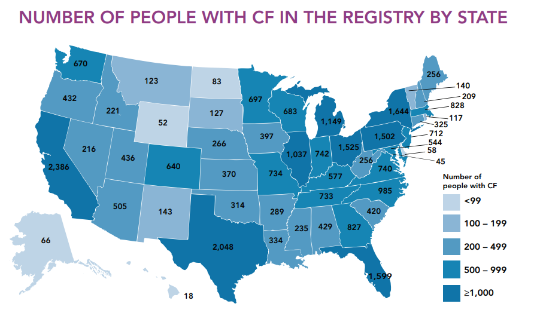
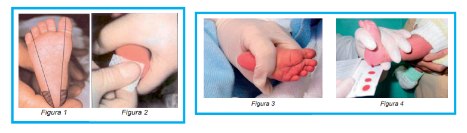
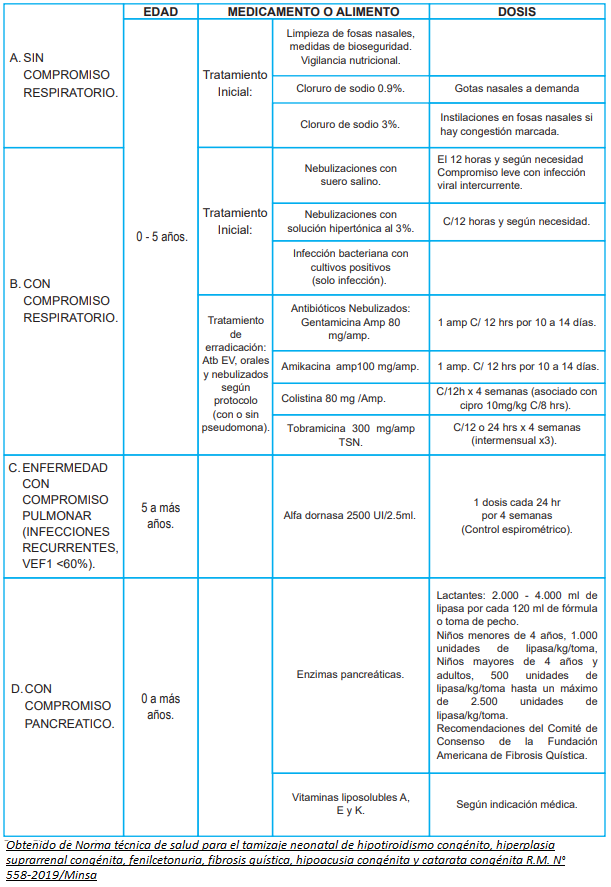

Información
La FQ es la enfermedad más común en la población caucásica. La incidencia en Europa es de 1 cada 2000 personas y 1 cada 2500-3000 nacimientos [1] [2]. Uno de los casos en los que la situación de la FQ ha mejorado es Francia. Este país ha presentado un incremento en la proporción de población adulta desde 1992 hasta 2014, pasando desde el 18,7% al 52,6%. En España, 1 de cada 35 habitantes porta alguna de las mutaciones causantes de la FQ y la incidencia es de aproximadamente 1/5000 niños nacidos [3]. Además, esta varía entre sus comunidades. Por un lado, la Comunidad de Canarias presenta una incidencia de 1:2810; por otro lado, otras comunidades presentan incidencias más bajas como Cataluña (1:4510) y Castilla-León (1:5352) [2]. El Reino Unido presentaba una incidencia de 1:2500 entre 1997 y 1985 [2]. En el 2014, la edad media de fallecimiento era de 30 años (al igual que Estados Unidos y Francia). Esta cifra era superada por Países Bajos, para el cual la edad media de defunción era de 37 [4]. Asimismo, el Reino Unido, y Canadá, presentan una esperanza de vida de recién nacidos de 30 años a más, además de tener pacientes con más de 40 años de edad. En el 2004, se hizo una recopilación de la incidencia estimada en diferentes países de Europa, la cual se muestra a continuación: En América, la FQ afecta a más de 30.000 personas en Estados Unidos. La incidencia en este país es de 1/4000 y población caucásica con herencia europea es de 1/2500, la esperanza de vida es de 37 años y para los nacidos entre 2013 y 2017 es de 40 años a más [1] [5] [6][7] [8]. La edad media en este país es de 17,9 años y se ha visto un aumento en la proporción de población adulta desde 1986 hasta 2013 (de 29,2% a 49,7%) [1]. Actualmente, el 51% de adultos con FQ tienen trabajo, el 43% está en condición de casado o vive con su pareja y el 31% tienen un título universitario [7]. Además, el tamizaje neonatal que se realiza detecta el 64% de los niños con FQ [8]. En el 2018, la media de edad de muerte fue de 30,8 años [9]. En el siguiente gráfico se puede observar la cantidad de personas que padecen esta enfermedad por estado en Estados Unidos:  En Canadá, la edad media de sobrevida es de 50,9 años, además de que la proporción de la población adulta ha aumentado de 36,3% (1992) a 59,7% (2014) [10]. En particular, en Quebec se reporta una incidencia de 1/891 nacidos [2]. En Latinoamerica el principal problema es el diagnóstico tardío, por ello la edad media de defunción es de 3 años (1989-1991) [9]. Además, la incidencia varía entre 1/3900 y 1/18500 [1]. En Chile, la incidencia es de 1/6000 a 1/8000 recién nacidos (equivalente a 40-50 casos anuales). La edad media de defunción es de 3,1 años (1989-1991) y la mortalidad más elevada se registró para menores de 1 año (9,81 por cada millón de habitantes) [10][11]. Fue gracias a la creación del Programa Nacional de FQ que disminuyó el promedio de edad en diagnóstico y aumentó la proporción de población en personas mayores de 15 y 18 años [10]. Para 2014, el MINSAL reportó 395 pacientes, de los cuales 162 eran mayores de 18 años [12]. En Argentina, la edad media de defunción era de 8,7 años (1989-1991) y la sobrevida para pacientes de 17 años era del 45% en 1999, cifra que ha aumentado hasta 80% en 2018 debido a la atención en centros especializados [10]. En Colombia, en el 2004, reportó que de los 128 pacientes con FQ, solo el 14,8% superó los 18 años. [13] La incidencia en otros continentes es variable. En África la incidencia es alta y varía entre 1/42 y 1/7056 nacimientos y en la raza negra americana es de 1/17000. En Oriente medio varía entre 1/2560 y 1/15876. Particularmente, en la India, la incidencia es de1/40000 y en recién nacidos es de 1/100000. La incidencia en asiáticos es muy baja, siendo de 1/32000 en asiáticos-americanos, 1/90000 en población asiática en Hawaii y 1/100000 habitantes en Japón, donde la incidencia en recién nacidos varía entre 1/320000 y 1/680000 [1][2]. Finalmente, la esperanza de vida en países en vía de desarrollo es muy baja, en países como la India y El Salvador los pacientes no pasan la adolescencia [5].
En PerúActualmente, se estima que nacen entre 1/9000 a 1/15000 niños con Fibrosis Quística. El diagnóstico temprano es fundamental para aliviar los futuros síntomas de esta enfermedad, los cuales suelen aparecer a partir de los 2 meses de vida (2 meses síntomas digestivos y 3 meses síntomas respiratorios) [14]. En nuestro país se realiza el tamizaje neonatal, el cual consiste en la toma de muestra de sangre del talón del recién nacido después de las 48 horas de vida. El procedimiento se puede observar en las figuras 1, 2, 3 y 4 [15].  Lamentablemente, este tamizaje no se realiza de forma obligatoria a cada recién nacido del Perú. En hospitales de EsSalud, este sí se toma como parte del servicio que estos establecimientos prestan. Sin embargo, en hospitales Minsa, solo 2 lo realizan de forma obligatoria y gratuita: el Instituto Nacional Materno Perinatal (INMP) y en el Hospital Nacional Docente Madre Niño San Bartolomé [15][16][17] Para el año 2017, se tenía conocimiento de menos de 50 pacientes vivos en nuestro país con diagnóstico confirmado (mayor porcentaje pacientes pediátricos). Las mutaciones más frecuentes en estos pacientes son la p.Phe508del, la p.Gly542 y la p.Arg 1162, mutaciones presentes en la fibrosis quística tipo 1 y 2, cuya característica principal es que célula es incapaz de sintetizar los canales de cloro [18][19] También se utiliza la prueba del sudor para el diagnóstico de esta enfermedad, la cual mide cuánto cloruro presenta el sudor. Esta se realiza si el tamizaje neonatal muestra un resultado sospechoso. Asimismo, se emplea el análisis molecular, la cual es tomada cuando la prueba de sudor presenta valores intermedios o límites. Sin embargo, Aquino sostenía en el 2017 que existían limitaciones al momento de acceder a este tipo de pruebas en nuestro país, razón por la que afirmaba que la enfermedad es infradiagnosticada. [15][18][20] El tratamiento que se utilizará dependerá de qué tanto afecta la enfermedad al paciente. En nuestro país, actualmente se sigue el tratamiento según la siguiente tabla: 


Referencias
[2]. Sanz Herrero B, Castillo Arenal T. (2012) Consideraciones psicosociales y sistemas de salud. Tratado de Fibrosis Quística. Editorial Justim SL. Capítulo 36 [3]. MARÍA LINA BOZA C, & Et. al. (2021). Consenso chileno para la atención integral de niños y adultos con fibrosis quística. Revista Chilena De Enfermedades Respiratorias, 36(4), 268–333. Recuperado a partir de https://revchilenfermrespir.cl/index.php/RChER/article/view/963 [4] Cystic Fibrosis Canada. (2017, noviembre). THE CANADIAN CYSTIC FIBROSIS REGISTRY 2016 ANNUAL DATA REPORT. Recuperado a partir de: https://www.cysticfibrosis.ca/uploads/2016%20Registry%20Annual%20Data%20Report_2.pdf [5]. Ministerio de Salud Argentina. (2020, 12 noviembre). Decreto 884/2020 | Digesto de la Legislación Sanitaria Nacional. Recuperado a partir de: http://www.msal.gob.ar/dlsn/categorias/enfermedades/decreto-8842020